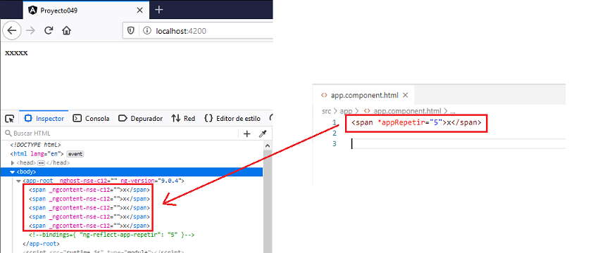
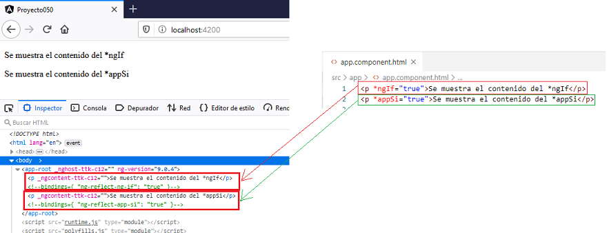

Al igual que las directivas de atributo personalizadas, en Angular podemos crear nuestras propias directivas estructurales a parte de las internas de framework: *ngFor, *ngIf, *ngSwitchCase y *ngSwitchDefault.
Recordemos que las directivas estructurales tienen por objetivo añadir, manipular o eliminar elementos del DOM (Document Object Model)
Con un ejemplo veremos los pasos para su creación.
Crear una directiva estructural personalizada cuyo objetivo sea repetir n veces el texto que muestra. La sintaxis para luego utilizarla debe ser:
<span *appRepetir="5">x</span>
Crearemos primero el proyecto
ng new proyecto049
Procedemos a crear la directiva personalizada llamando a la misma 'Repetir' (recordar que Angular CLI agrega por defecto el prefijo 'app'):
ng generate directive Repetir
Se crean dos archivos y se modifica uno.
Por un lado se modifica el archivo 'app.module.ts' haciendo referencia a la clase 'RepetirDirective':
import { BrowserModule } from '@angular/platform-browser';
import { NgModule } from '@angular/core';
import { AppComponent } from './app.component';
import { RepetirDirective } from './repetir.directive';
@NgModule({
declarations: [
AppComponent,
RepetirDirective
],
imports: [
BrowserModule
],
providers: [],
bootstrap: [AppComponent]
})
export class AppModule { }
Se crea propiamente el archivo que contendrá la lógica de la directiva y tiene como nombre 'repetir.directive.ts':
import { Directive } from '@angular/core';
@Directive({
selector: '[appRepetir]'
})
export class RepetirDirective {
constructor() { }
}
También se crea el archivo 'resaltado.directive.spec.ts' para especificar pruebas unitarias (por el momento no hemos trabajado con este tipo de archivos, no lo modificaremos ni analizaremos)
Procedemos a codicar el archivo 'repetir.directive.ts' implementando la lógica de nuestra directiva:
import { Directive, TemplateRef, ViewContainerRef, Input } from '@angular/core';
@Directive({
selector: '[appRepetir]'
})
export class RepetirDirective {
constructor(private templateRef: TemplateRef<any>,
private viewContainer: ViewContainerRef) { }
@Input() set appRepetir(numero: number) {
for (var i = 0; i < numero; i++)
this.viewContainer.createEmbeddedView(this.templateRef);
}
}
La diferencia con las directivas de atributo es que se inyectan al constructor dos objetos, uno de tipo TemplateRef<any> y otro de ViewContainerRef:
constructor(private templateRef: TemplateRef<any>,
private viewContainer: ViewContainerRef) { }
Definimos un setter (método que define un valor a una propiedad) para capturar el valor que recibe la directiva:
@Input() set appRepetir(numero: number) {
for (var i = 0; i < numero; i++)
this.viewContainer.createEmbeddedView(this.templateRef);
}
El atrituto 'this.templateRef' tiene la referencia a la etiqueta HTML (en este caso 'span') que le aplicamos la directiva, por ejemplo:
<span *appRepetir="5">x</span>
Disponemos un 'for' que se repita la cantidad de veces asignada a la directiva:
for (var i = 0; i < numero; i++)
Dentro del for mediante el objeto 'this.viewContainer' procedemos mediante el método 'createEmbeddedView' a insertar la referencia de la etiqueta HTML (por ejemplo un 'span'):
this.viewContainer.createEmbeddedView(this.templateRef);
Para entender como afecta la directiva creada debemos ver el resultado en el navegador:
Para probar la directiva personalizada modificamos el archivo 'app.component.html':
<span *appRepetir="5">x</span>
Podemos probar esta aplicación en la web aquí.
Crear una directiva estructural personalizada que imite el funcionamiento de la directiva estructural que trae Angular por defecto: *ngIf (sin la parte del else). Debe emplear la siguiente sintaxis:
<p *appSi="true">Se muestra el contenido del *appSi</p>
Crearemos primero el proyecto
ng new proyecto050
Procedemos a crear la directiva personalizada llamando a la misma 'Si' (recordar que Angular CLI agrega por defecto el prefijo 'app'):
ng generate directive Si
Se crean dos archivos y se modifica uno.
Procedemos a codicar el archivo 'si.directive.ts' implementando la lógica de nuestra directiva:
import { Directive, TemplateRef, ViewContainerRef, Input } from '@angular/core';
@Directive({
selector: '[appSi]'
})
export class SiDirective {
constructor(private templateRef: TemplateRef<any>,
private viewContainer: ViewContainerRef) { }
@Input() set appSi(visible: boolean) {
if (visible)
this.viewContainer.createEmbeddedView(this.templateRef);
else
this.viewContainer.clear();
}
}
Dependiendo del parámetro del setter procedemos a insertar la etiqueta HTML a la que se le aplica la directiva 'appSi' o llamamos a 'clear' para dejar vacío su interior:
@Input() set appSi(visible: boolean) {
if (visible)
this.viewContainer.createEmbeddedView(this.templateRef);
else
this.viewContainer.clear();
}
Para probar la directiva personalizada modificamos el archivo 'app.component.html':
<p *ngIf="true">Se muestra el contenido del *ngIf</p> <p *appSi="true">Se muestra el contenido del *appSi</p>
Podemos probar esta aplicación en la web y ver que el código HTML generado es exactamente igual ya sea que utilicemos la directiva '*ngIf' o la directiva personalizada que hemos creado '*ngSi':
Para aprender más sobre directivas estructurales podemos consultar el código fuente de la directiva *ngIf en el repositorio oficial de Angular.